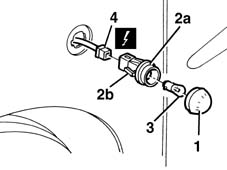
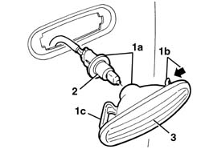

5550C22 L/H OR R/H SIDE FLASHER (ONE) - R+R
- Path
- Procedures > 55 ELECTRICAL EQUIPMENT > 5550 WARNING AND MANOEUVRING INDICATORS > 5550C TURN SIGNAL/HAZARD WARNING LIGHTS > 5550C22 L/H OR R/H SIDE FLASHER (ONE) - R+R
- Kind
- repair procedure (removal / refitting; the operation number is the code)
- Applies to
- all engines; all production periods
- Interactive page
- https://sloeber94.github.io/elrnDB-fMltpl/en/#/2891950
Applies to: all engines; production: fino a 05/99, da 09/03, da 06/99 a 03/02, da 04/02 a 08/03, fino a 05/04
 Removing
Removing
 Refitting
Refitting1. Remove the lens cover using a plastic blade.
2. Remove the bulb holder (2a) acting on the tabs (2b).
3. If necessary, extract the bulb.
The bulb is a press fit.
4. Disconnect the electrical connection and recover the bulb holder.
 | Name | Connector |
|---|---|---|
4 | Left side repeater |
| Name | Connector |
|---|---|---|
4 | Right side repeater |

Applies to: all engines; production: fino a 05/99, da 09/03, da 06/99 a 03/02, da 04/02 a 08/03, fino a 05/04
Refitting
RemovingCheck that the parts of the side repeater are not damaged and that the bulb is working properly.
Connect the electrical connection.
If removed, insert the bulb in the bulb holder.
Fit the bulb holder.
Fit the lens cover.
Test the operation of the side repeaters.
Applies to: all engines; production: da 06/04
Removing
Refitting- Extract the side repeater (1a) releasing the retainers (1b) and then (1c).
- Rotate the bulb holder and the bulb and extract it.
- Keep the side repeater.

Applies to: all engines; production: da 06/04
Refitting
Removing- Check that the side repeater is not damaged.
- Fit the bulb holder in the housing in the side repeater.
- Fit the side repeater in place attaching the retainers.
- Check that the side repeater is working.